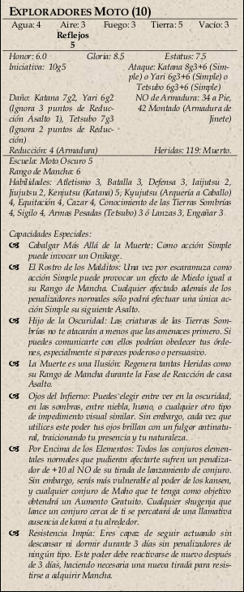

|  | Si los personajes, estúpidamente, deciden atacar, cuatro akutsukai Moto desarrollan alas esqueléticas y salen volando,
haciendo caer flechas desde el cielo sobre ellos. Los guardias de Kage podrían distraerlos durante dos asaltos mientras
gritan a los personajes que se lleven a Kage de ahí, pero los Moto van a caballo. A menos que los héroes cambien ese
hecho, los Moto continuarán lanzándoles flechas y lanzas. |